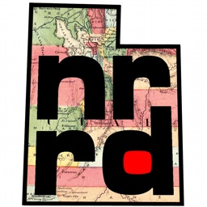

unrrdu
- unu ... make head data convert resample cmedian quantize unquantize project slice dice join crop pad reshape permute swap shuffle flip block unblock histo dhisto jhisto histax heq gamma 1op 2op 3op lut rmap imap save
|
|
unrrdu | ||
| teem |
 |
- General unu Info - unu ... make head data convert resample cmedian quantize unquantize project slice dice join crop pad reshape permute swap shuffle flip block unblock histo dhisto jhisto histax heq gamma 1op 2op 3op lut rmap imap save |
The capabilities of unu are listed simply by typing "unu" with no command-line options:
--- Utah Nrrd Utilities (unrrdu) command-line interface ---
unu make ... Create a nrrd (or nrrd header) from scratch
unu head ... Print header of a nrrd file
unu data ... Print data segment of a nrrd file
unu convert ... Convert nrrd to another type (as if by per-value cast)
unu resample ... Filtering and {up,down}sampling with a seperable kernel
unu cmedian ... Cheap histogram-based median filtering
unu quantize ... Quantize floating-point values to 8, 16, or 32 bits
unu unquantize ... Recover floating point values from quantized data
unu project ... Collapse scanlines to scalars along some axis
unu slice ... Slice at a position along an axis
unu dice ... Slice *everywhere* along one axis
unu join ... Connect slices and/or slabs into a bigger nrrd
unu crop ... Crop along each axis to make a smaller nrrd
unu pad ... Pad along each axis to make a bigger nrrd
unu reshape ... Superficially change dimension and/or axes sizes
unu permute ... Permute scan-line ordering of axes
unu swap ... Interchange scan-line ordering of two axes
unu shuffle ... Permute samples along one axis
unu flip ... Reverse order of samples along one axis
unu block ... Condense axis-0 scanlines into "blocks"
unu unblock ... Expand "blocks" into scanlines on axis 0
unu histo ... Create 1-D histogram of values in a nrrd
unu dhisto ... Create (PGM) image of 1-D value histogram
unu jhisto ... Create joint histogram of two or more nrrds
unu histax ... Replace each scanline along an axis with its histogram
unu heq ... Perform histogram equalization
unu gamma ... Brighten or darken values with a gamma
unu 1op ... Unary operation on a nrrd
unu 2op ... Binary operation on two nrrds, or on a nrrd and a constant
unu 3op ... Ternary operation on three nrrds or constants
unu lut ... Map nrrd through univariate lookup table
unu rmap ... Map nrrd through *regular* univariate map ("colormap")
unu imap ... Map nrrd through *irregular* univariate map ("colormap")
unu save ... Write nrrd with specific format, encoding, or endianness
As you can guess from the above, unu is a lot like cvs in that there is exactly one program to remember the name of (and to add to your path), but you access the different capabilities with different command names following "unu". For example, if you run "unu slice", you get:
unu slice: Slice at a position along an axis. Output nrrd dimension is one
less than input nrrd dimension. Per-axis information is preserved.
Usage: unu slice [-i <nin>] -a <axis> -p <pos> [-o <nout>]
-i <nin> = input nrrd
-a <axis> = axis to slice along (int)
-p <pos> = position to slice at:
o <int> gives 0-based index
o M-<int> give index relative to the last sample on the axis (M
== #samples-1).
-o <nout> = output nrrd (string)
The command line is dead, long live the command line.